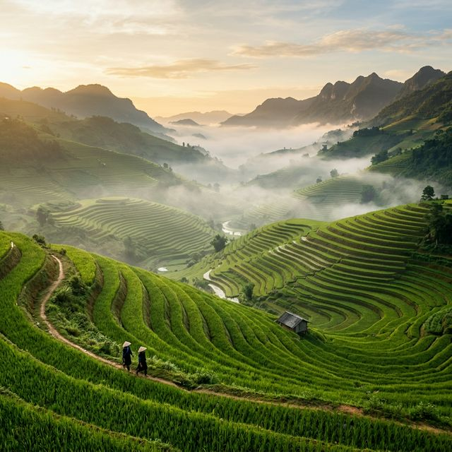
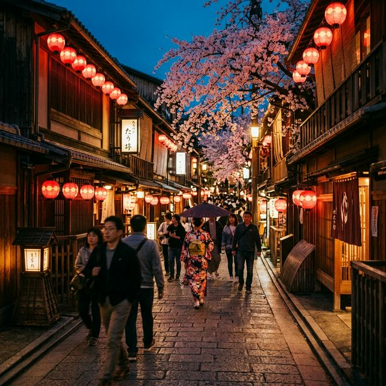
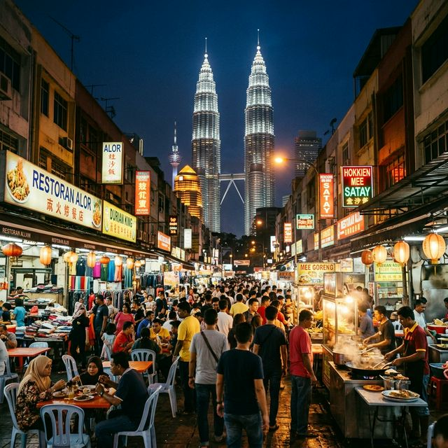
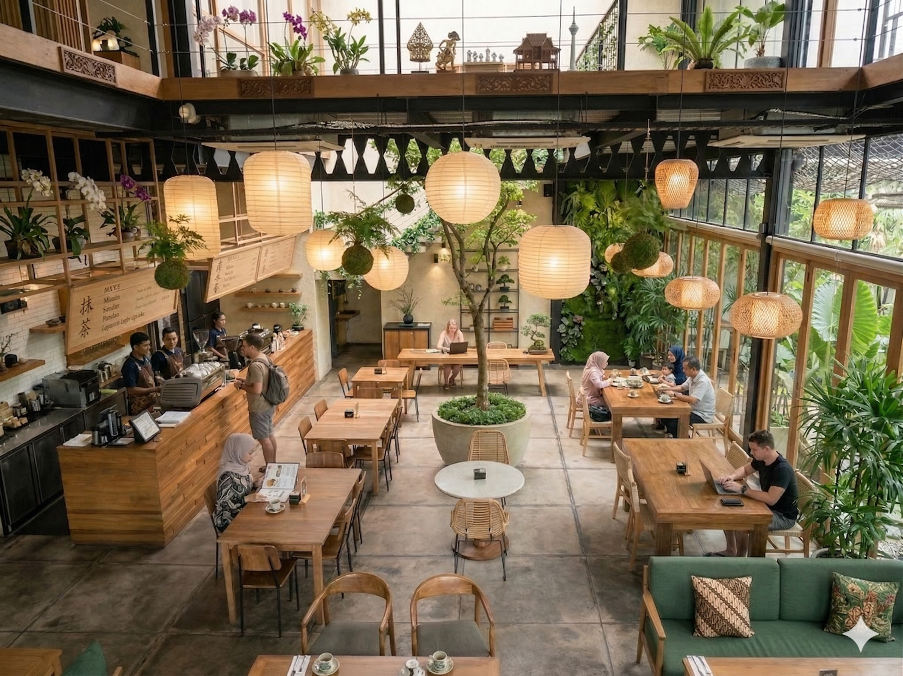

Quelque part entre deux continents, on a décidé de choisir le monde.
Kuala Lumpur, 2027. Le début de tout.
DÉCOUVRIR
Kuala Lumpur, 2027. Le début de tout.
NOTRE HISTOIRE
L'Afrique m'a vu naître.
L'Europe nous a présentés.
L'Amérique nous a dépaysés.
Mais l'Asie, en 2017, nous avait déjà charmés.
Dix ans plus tard, nous revoilà.
D'où tu viens ?
La première question qu'on te pose en Malaisie.
Pas pour te mettre dans une case. Pour mieux te connaître.
À Kuala Lumpur, la diversité ne se revendique pas — elle se vit. Malaisien, Nigérien, Français, Indien, Japonais. Tout le monde enrichit le paysage.
L'Asie, on l'a rencontrée une première fois. Elle ne nous a plus quittés.
LE VOYAGE
On a choisi de prendre le temps. Chaque étape est une façon d'apprivoiser ce nouveau monde — ses saveurs, son rythme, sa chaleur humaine.
Se réveiller en douceur.
Premiers pas en Asie du Sud-Est. Le choc des sens entre les temples dorés de Sukhothai, les marchés nocturnes de Chiang Mai, et la douceur des îles du sud. Un baptême en douceur pour s'acclimater au rythme asiatique.
Dix ans plus tard, on revient là où tout a commencé.


Apprendre à ralentir.
Les terrasses de riz brumeuses de Sapa, les lanternes dorées de Hoi An, le café servi lentement dans les ruelles de Hanoï. Le Vietnam enseigne la patience et l'émerveillement devant la simplicité.



S'émerveiller encore.
La précision, la beauté, le contraste permanent entre tradition millénaire et innovation futuriste. Les cerisiers de Kyoto, l'énergie de Tokyo, les ryokans cachés dans les montagnes. Le Japon ne ressemble à rien d'autre.



Le début de tout le reste.
Le soleil, la nature, les plages de Langkawi, la jungle de Taman Negara — et au milieu de tout ça, une ville vibrante où tout est possible. On arrive à Kuala Lumpur pour commencer une nouvelle vie, pas juste un nouveau chapitre.



Pour arriver en Malaisie comme si on y était déjà un peu chez nous.
NOTRE VISION
Ce voyage, c'est pas des vacances prolongées. C'est une fondation.
Un endroit stable, chaleureux, ouvert sur le monde entier — où poser ses valises, ses projets, et un jour, sa famille.
Un endroit où les enfants qu'on aura n'auront jamais à choisir entre qui ils sont et d'où ils viennent.

QUI SOMMES-NOUS
Humanitaire & communautaire
Service civique aux Philippines, projets sociaux au Canada. Elle va là où les gens ont besoin qu'on soit présent.
Architecte cloud & IA · Nomade numérique
Toastmaster, passionné d'IA. Il la met au service des gens — et voyage avec dans son backpack.
Chaque décision, chaque rêve — une promesse qu'on se fait l'un à l'autre.
Et si notre histoire vous inspire, alors ce site aura réussi ce pour quoi il existe.
SUIVRE L'AVENTURE → THE TRAVELLING TECHIE